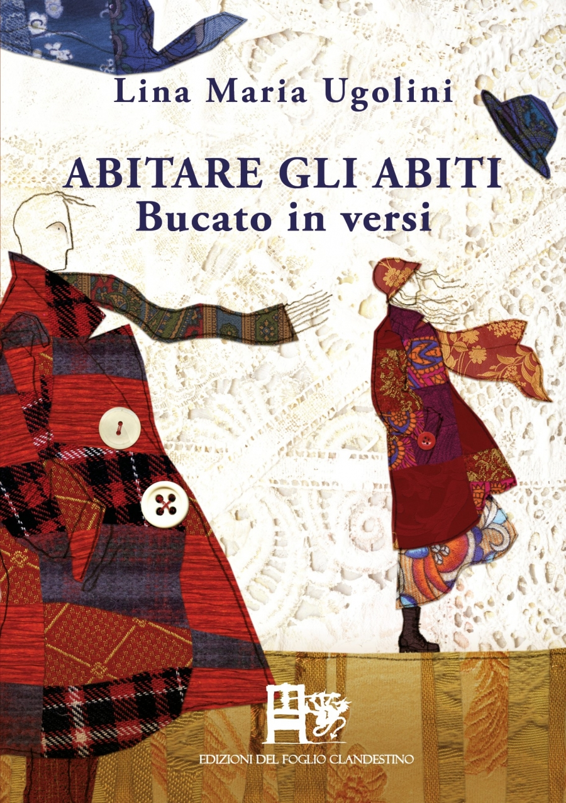
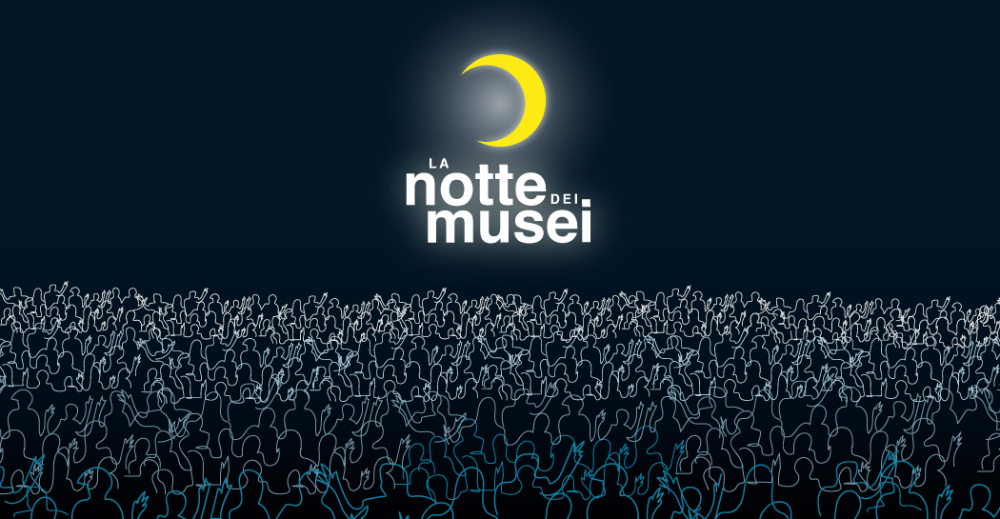

Apertura straordinaria
Siamo felici di comunicare che giorno 11 Giugno 2024 effettueremo un’apertura straordinaria per permettere ai visitatori di poter fruire di un momento di libertà da dedicare alle proprie famiglie con la nostra esperienza sensoriale. Il Polo Tattile è lieto di invitarvi Sabato 11 Febbraio dalle 18.00 alle 22.00, per offrirvi un coinvolgente ed emozionante viaggio dedicato alla cultura, dove i sensi vi accompagneranno all’interno di una splendida ed emozionante atmosfera. INGRESSO GRATUITO
Altri eventi

Festival "le vie dei tesori"
6 marzo 2023 h 17:00
, LGT-2.jpg)
Una domenica al museo
8 gennaio 2023 h 17:00

Notte di "Luce" al Museo
28 febbraio 2023 h 23:00
Presentazione libro Abitare gli abiti
6 marzo 2023 h 17:00